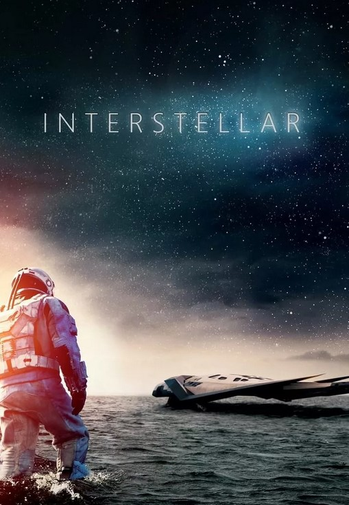

Интерстеллар
Рейтинг: 8/10
Год: 2014
Режисер: Кристофер Нолан
Описание Интерстеллар

Когда засуха, пыльные бури и вымирание растений приводят человечество к продовольственному кризису,
коллектив исследователей и учёных отправляется сквозь червоточину (которая предположительно соединяет
области пространства-времени через большое расстояние) в путешествие, чтобы превзойти прежние ограничения
для космических путешествий человека и найти планету с подходящими для человечества условиями.
Отзывы об Интерстеллар
Сергей
Отличный фильм
Тимур
Осознанные сны